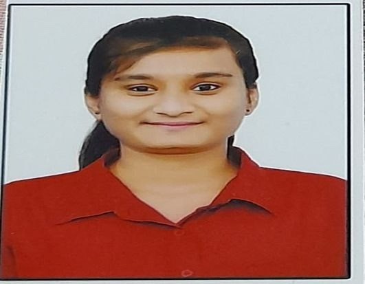

Hritika Sharan

A Short Summary About ME
My name is Hrtitka Sharan.I am currently pursuing B.tech in Computer Science Engineering(CSE)in KIIT Unversity,Bhubaneswar.I consider myself as a Learner ,I would love to learn new things and accept new responsiblities
I am looking forward to gain new experience and explore new fields.I am a hardworking and dedicated individul who is keen to learn new things
Education
- January 2024-Present CGPA-8.11
- CLASS XII CBSE Precentage-89.2%
- CLASS X CBSE Precentage-91.0%
Language
- C programming
- Html
- Web Development(Front End Back End (2024-Ongoing))
Achivements
- National Level Player In Chess U-19
- Won 2nd Price at Kritarth 7.0(Nukkad)
- Won 1st Price in XIMB(Nukkad)
- Won 3rd Prince at Spring Fest in IIT KHARAGPUR(Nukkad)
Skills
- Good Communication Skills
- Problem Solving Skills
- TeamWork
- Leadership Quality
- Management Skills
- Critical Thinking
About me